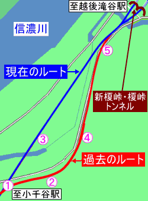
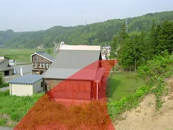
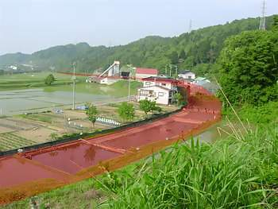
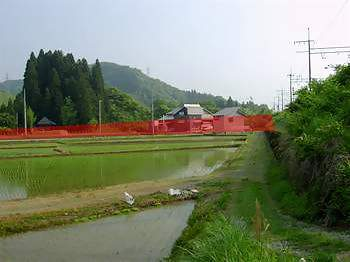
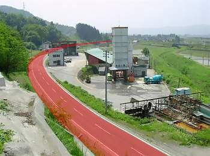
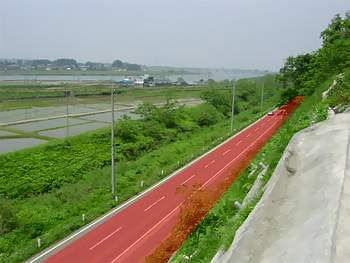
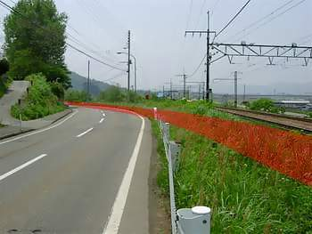
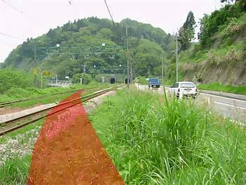

| 小千谷～越後滝谷編 |
真夏の風＞上越線あれこれ＞線路改良史＞このページ
|
小千谷～越後滝谷の線路改良区間は短い距離だったが、10‰のアップダウンを伴う3つの半径300メートル級の曲線を解消させるため、昭和42年の複線化工事の際に現在のルートに変更された。
<旧線の線路概要>
左の図の1の地点から半径300メートルの右カーブを描き、10パーミルの勾配を下る。その後、2の付近で同半径の左カーブに変わり、さらに10‰勾配を下ってゆく。この左カーブの終端付近の4で、小千谷駅付近から続いた下り勾配が終わり、すぐさま10‰の上り勾配となる。そして束の間のストレートののち、半径320メートルの右カーブを描いて榎峠トンネルへ向かっていた。
1から4にかけては、山を切り取った区間と築堤とが互いに連続する勾配区間だったが、新線切替え後にそれらはザックリと撤去され、現在では民家や田畑が広がっている。この区間で旧線当時の面影を残すものといったら、旧線が通っていたと思われる付近の田畑の区割りが曲線になっているぐらい（地点2）。
その先の4から5にかけては、旧線の跡に沿うような格好で道路があるが、これが旧線の跡地をそのまま道路に転用したものかどうかは不明。ただ、その可能性は高いと思われる。
<現在線の状況>
田畑のド真中を突っ切るような格好で築堤が築かれ、ほぼ一直線に榎峠トンネルへと向かっている。
昭和42年の時刻表で確認してみたところ、この区間の線路改良によって得た時間短縮は僅か1～2分だった、減速を伴なう半径300メートル級の曲線を3つカット出来たので、運転士にとっては大きな改善だったのではないだろうか。
|
| 現在の様子 |

*小千谷から越後滝谷に向かう方向で順を追って掲載
*掲載している写真に描いてある赤いラインは、旧線の推測位置を示す |
【地点1】
 |
【地点1】
 |
| ↑地点1から新旧分岐方向を望む。現在のルートは榎峠のトンネルに向かってまっすぐに築堤が築かれいる。なお、この場所だけ架線柱が線路から大きく離れていたので、この辺りが新旧の分岐点ではなかろうか・・・と推測した。 |
↑左の写真の先から、地点2方向を望む。昔あった築堤はザックリと撤去され、民家が建っている。ただし、この写真で示している旧線推測位置はあまり自信がない。写真の中央に大きく写っている民家の右側にある田んぼ付近が旧線だった可能性もある。 |
|
↑地図へ ↑ |
【地点2】
 |
【地点3】
 |
| ↑2付近にある小さな丘から4方向を撮ったもの。この付近の田畑は、旧線跡と思われるような曲線で区割りされている。 |
↑3付近から、新旧の分岐点である1方向を撮ったもの。大きな木が立ち並ぶ場所には神社があり、当時の地図で確認すると、そのすぐ脇を旧線が駆け抜けていた。ただ、この神社は旧線推測ルートの経路上に位置しているので、旧線当時はもう少し山側にあり、旧線撤去後に現在地へ移転した可能性がある。そうでなければ、旧線の推測ルートそのものが若干ずれている事になる。謎。 |
|
↑地図へ ↑ |
【地点4】
 |
【地点4】
 |
| ↑地点4付近の小さな山の上から、新旧分岐点1方面を撮ったもの。 |
↑左の写真と同じポイントから、地点5の榎峠トンネル方面を撮ったもの。写真に写っている道路と旧線のルートがぴったり合致するかは不明だが概ね一致すると思われる。 |
|
↑地図へ ↑ |
【地点5】
 |
【地点5】
 |
| ↑地点5から小千谷方面を撮ったもの。小さな山に沿う格好で蛇行してきた旧線は、ここで現在のルートと合流する。 |
↑5の合流ポイント。2つ見えるトンネルの左側が、単線時代から使用されている「榎峠トンネル」。右側のトンネルは、複線化の際に新設された「新榎峠トンネル」。 |
>> この付近の航空写真 <<
|
↑地図へ ↑
↑このページの先頭へ ↑ |